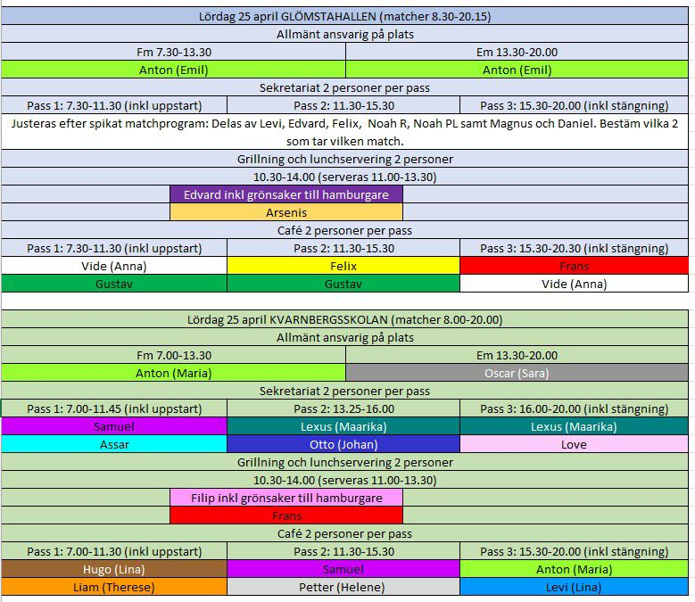
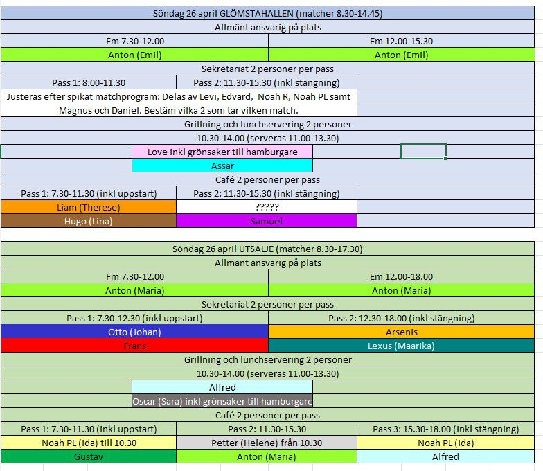
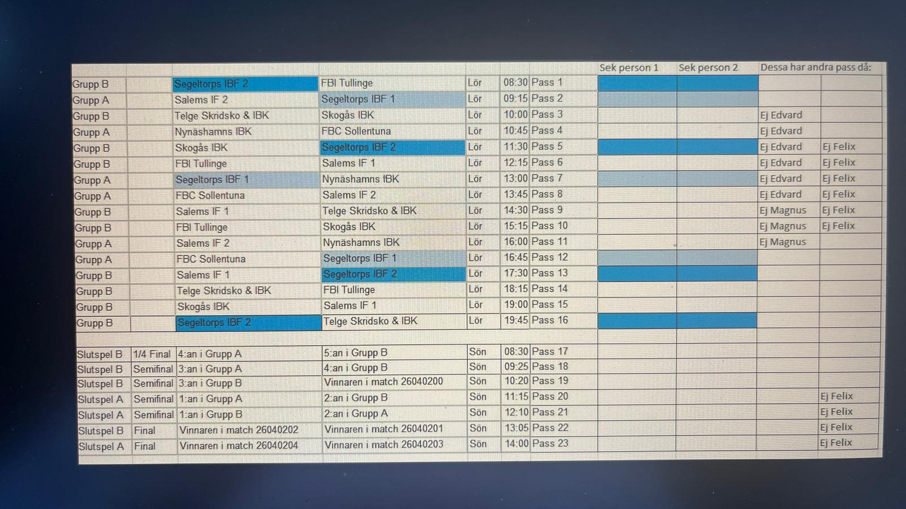
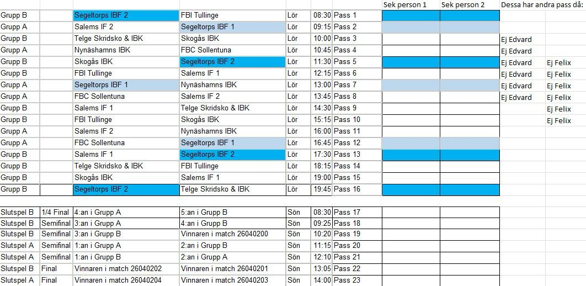
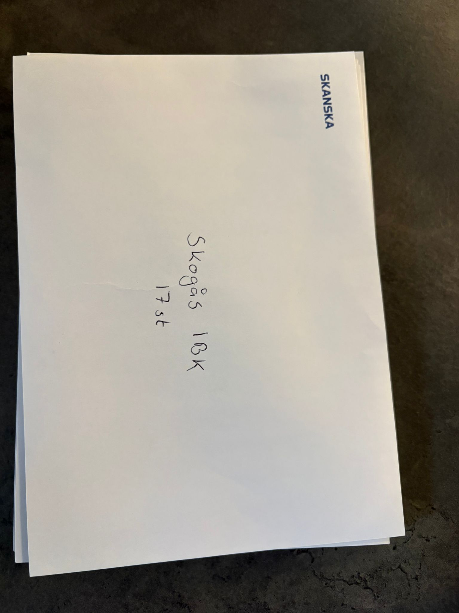
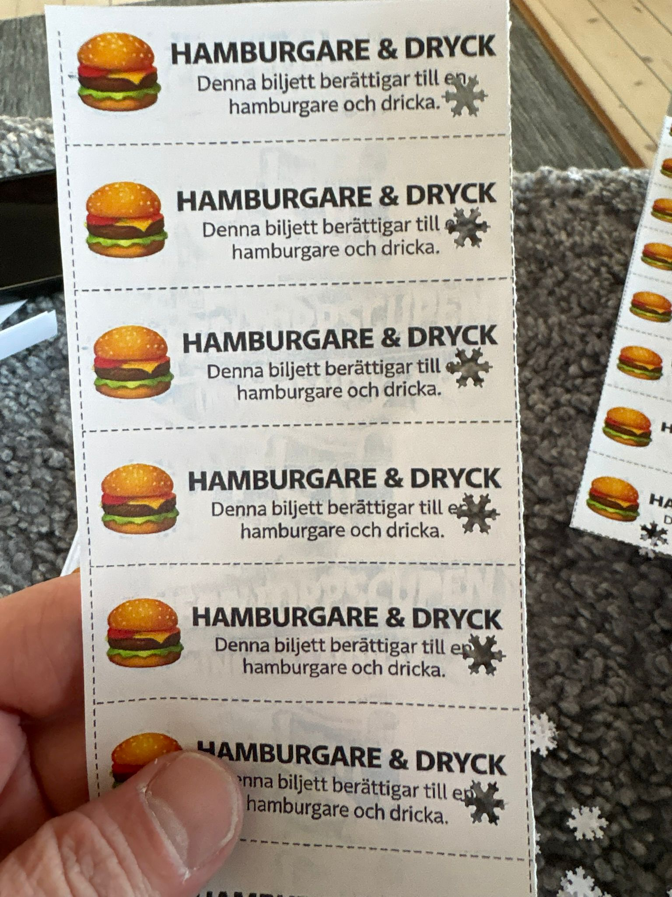

Översikt — när & var
Glömstahallen
P13 båda dagarna.
Första match 08:00, samling 07:15–07:30.
Första match 08:00, samling 07:15–07:30.
Kvarnbergshallen
P14 lördag. Ersatte Utsälje när Huddinge handboll inte flyttade.
Matcher 08:00–11:45, lunch 11:45–13:00, matcher 13:25–19:30.
Hallen tillgänglig från 07:00.
Matcher 08:00–11:45, lunch 11:45–13:00, matcher 13:25–19:30.
Hallen tillgänglig från 07:00.
Utsäljehallen
P14 söndag.
Cupens sidor
- Cupens hemsida: segeltorpscupen.cupmanager.net
- Alla matcher & live-resultat: matcher (alla lag)
- Segeltorps P13 — lag 1: lagsida
- Segeltorps P13 — lag 2: lagsida
Bemanningsscheman (översikt)
Senaste gällande scheman efter Kvarnberga-bytet 20/4. Alla roller samlade per dag.


RollSekretariat
Arbetsuppgifter
- Hålla koll på tidtagning och ev resultat.
- Påminn om caféet, säg till när lunchen stänger snart.
- Speakerstil: "Nu blir det match mellan X och X".
- Sätt på musik i paus (ingår i rollen). Sätt på musik vid mål och halvlek. Spotify-lista.
- Ta foton under dagen — både våra killar och övriga lag.
Ta med
- Laddad mobil med Cup Manager Admin installerad (se nedan).
- Penna och papper.
Appen
Ladda ner Cup Manager Admin innan fredag:
- iOS: App Store
- Android: Google Play
| Hall | Kod | Vad görs i appen |
|---|---|---|
| Glömsta | kolla chatten | Målskytt + assist live under matcherna |
| Utsälje | kolla chatten | Laguppställningar + ev slutresultat (stäm av med tränarna) |
| Kvarnberga | — | Ingen app. P14 får inte tävla pga ålder, bara spela — inga resultat rapporteras. |
Tutsignalen i Glömsta funkar inte — domarna måste blåsa i pipan när halvlekar/halvtidsvila är slut. Ska lagas i sommar. Påminn domarna.
Schema-ark i Glömsta
Finns på plats. Första matchen tas av Johan S + Matteo. Övriga fyller i själva beroende på om man coachar eller inte.


RollCafé
Arbetsuppgifter
- Göra kaffe, fylla på fika, koka korv i omgångar mellan 10:00 och 19:00.
- Prissätt bakverk om de är olika stora (grundpris 20 kr/st).
- Försök få till självbetjäning: "räkna ihop själv och swisha" — annars tar det tid när alla ska ha hjälp att räkna och kontrollera swish.
- Dela ut kuvert med hamburgarkuponger + medaljer till lagen när de kommer (finns på plats, preppade av Magnus på fredag kvällen).
- Säg till hallansvarig i tid om något börjar ta slut — särskilt i Kvarnberga/Utsälje där bara bokad personal finns.
Per hall
Glömsta: allt finns utom färskvaror och frysta hamburgare. Caféet behöver sorteras/göras fint inför öppning. Sortera läsk i olika kylar så det går att hitta.
Kvarnbergshallen: orörd — mer att göra där. Plats för caféet inne vid entrén och i korridoren till hallen.
Utsälje: vattenkokare finns, men bara en vanlig (långsam) kaffebryggare. Magnus C tar med 1–2 stora kaffekokare med termosar från jobbet.
Tidsreferens lördag Kvarnberga: kaffe + fralla räcker till 08:00. Caféet behöver inte vara helt klart förrän ca 08:45.
Kuvert till lagen (preppade fredag)
Innehåller hamburgarkuponger + medaljer (årgång 2014). Caféet delar ut till lagen när de kommer.


RollGrill, hamburgare & dricka
Arbetsuppgifter
- Starta upp grillar, grilla hamburgare, lämna ut till de som köpt.
- Servering kl 11:00–13:30. Rea ut grillade hamburgare om det behövs i slutet.
- Ställa ihop och ställa in grillen i skolan/släpet efter passet.
- Grillen behöver tändare (finns).
- Ha koll på tillbehör och fyll på — säg till café eller hallansvarig som kan fixa.
- Ta på jacka och handskar; detta sker utomhus.
Uppställning (bordsupplägg)
- Bord 1: bröd, hamburgerpapper, swishlapp, prislista, dricka.
- Bord 2: självplock av tillbehör (bra att kunna gå runt för att slippa kö).
- Flöde: lämna ut bröd i papper efter betalning → köparen hämtar tillbehör själv → hämtar hamburgaren vid grillen.
Tillbehör
Olika skålar med skivor av tomat, lök och gurka. Skuren sallad, ostskivor, ketchup, dressing, grillkrydda.
Lagbiljetter
Varje lag har redan köpt hamburgare inkl dryck och har biljetter för detta. Gäller hamburgare + en burk läsk/Festis (ej Vitamin Well). Undantag: ej söndag i Glömsta.
Utrustning
- Weber babyQ från Erik Ehrner (4 burgare åt gången).
- Större grill i reserv från Teo.
- Varmhållare från Helene Kane.
Placering
- Kvarnberga: tak ute för grillning (regn prognosticerat lördag).
Försäljningsregel: hamburgare + dricka = burk eller Festis. Inte Vitamin Well, inte Power.
Ta med
- Kylväska med frysta klampar för hamburgare (även för mjölk till caféet). Gäller Kvarnberga & Utsälje.
RollHallansvarig (lokalansvarig)
Finns till för att underlätta på plats för alla andra pass. Benämns ibland lokalansvarig.
Arbetsuppgifter
- Lämna biljett till mat och dricka till varje domare (en biljett per domare).
- Stötta café och grill när något börjar ta slut.
- Åka iväg och handla extra om det behövs.
Ta med
- Fotboll (ute) till Glömsta respektive Kvarnberga — låna ut till lag vid förfrågan under dagen.
Vi hjälps åt vid öppning och stängning av hall, café och grill.
RollBakning
- Pris: 20 kr/st — tänk på det storleksmässigt.
- Inget bak-tvång, men uppskattat. Förra årets fikaförsäljning var bäst på turneringen.
- Lämna på lördag enligt hallfördelning — till ditt första pass eller skicka med sonen.
Ta med
- Eget bak enligt fördelningen nedan.
Fördelning per hall (lämna lördag)
| Glömsta |
|---|
| Edvard |
| Alfred |
| Arsenis |
| Felix |
| Gustav |
| Levi |
| Love |
| Noah PL |
| Noah R |
| Vide |
| Kvarnberg |
|---|
| Anton |
| Assar |
| Filip |
| Frans |
| Hugo |
| Lexus |
| Liam |
| Oscar |
| Otto |
| Petter |
| Samuel |
Fredag kväll — förberedelse
- Iordningställning i Glömsta ca 17:00. Magnus C är på plats 17:05.
- Kvarnbergshallen: tillgänglig efter basketträning 20:30. Formell tid i bokningssystemet fram till 22.
- Lördag morgon: Magnus svänger förbi Kvarnberga strax före 07:00 och är i Glömsta ca 07:20 (nycklar).
- Parkering Kvarnberga: GPS till
Östergårdsvägen 24(sidoingång). Villagata utan parkering — parkera sedan på skolan (3 timmar gratis med app).